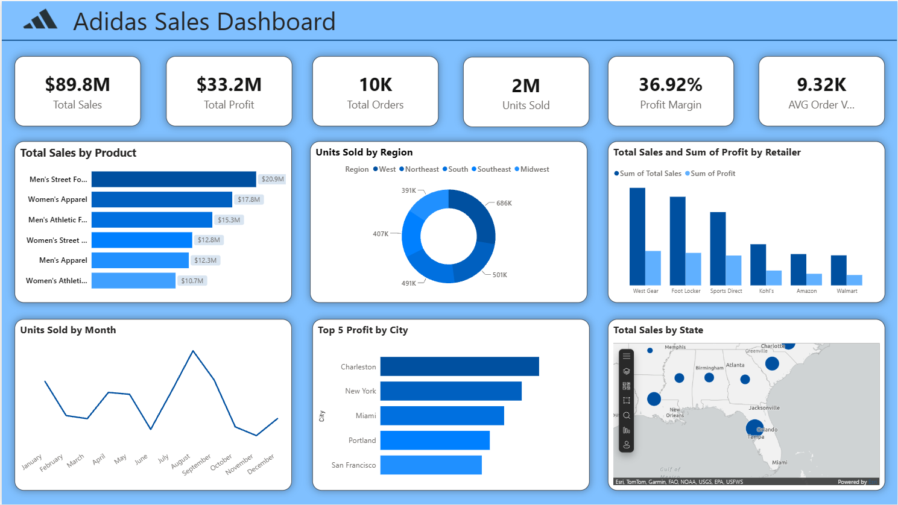

Adidas Sales Dashboard
This interactive Adidas Sales Dashboard built in Power BI visualizes $89.8M in total revenue and $33.2M in profit using advanced DAX modeling and a robust Star Schema. The UI features dynamic KPI cards, regional distribution charts, product performance breakdowns, and Esri map integrations to track key retail metrics seamlessly.